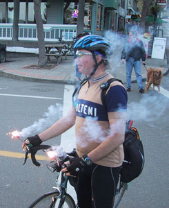

Volume 8 Issue 3 - May/June 2003
To Prologue or Not Prologue
Making the Distance
BC Randonneurs Crowsnest 1000
2003 Spring Brevet Images
One Happy Guy
300 km "Men of Faltering Faith"
Another long day...

NOTE: Please send any equipment reviews, PBP insight or ride reports for the July/Aug newsletter to Jon Muellner! There's lots of rides happening so I'm sure there's oddles of stories!
The May RUSA "American Randonneur" newsletter included the PBP application form and lots of good information for preparing for Paris-Brest-Paris. All you need is your passport before you get on the plane. All qualifying brevets are complete now and it's time to keep the miles up and stay focused.
SIR Email List
For those of you on-line, join in the SIR email list! It's a great way to share info, ride schedules, car-pooling to events and training with other SIR members. To get on go to http://www.phred.org/mailman/listinfo/sir. It's easy!
By Peter McKay
Congratulations! You've qualified to ride your first Paris-Brest-Paris and made your travel arrangements. Now is time for your most important decision. No, I'm not referring to selecting your start time: 80, 90 or 84 hours. Guidance on this topic is eloquently explained by Bill Bryant in the February 2003 RUSA newsletter. The decision I refer to is whether or not to ride the Prologue. The Prologue you ask?
You say you're familiar with PBP its route and control points to Brest, but never heard or given a thought about the Prologue. Well then, let me share my personal story as a guide for you in this decision.
In 1999, the Prologue was a 31.6 kilometer route through the surrounding villages that comprise Saint Quentin en Yvelines. It began at 9 Monday morning. Again, there will be a Prologue this year.
I tend not to be at ease before a "big" event. Prior to 1999, I had very little cycling experience beyond a few short local rides. The 200km was twice the distance of anything I had previously ridden. Each of the 1999 qualifying brevets scared me, and I was anxious before each. The same was true for PBP, only my anxiety was worse. Not only was I riding twice any previous distance, and it was 600 km further than any previous distance, I was in a foreign country. Fortunately, I was with my friends and we were in this together!
Amongst us, there had been some talk about riding the Prologue. I dismissed the idea as ludicrous. Why should we ride an extra 30 kilometers immediately before beginning this very challenging ride?
I arrive at breakfast, Monday morning, wearing street clothes. Mark Thomas is there in his cycling jersey and shorts. He wants the "full" PBP experience and the t-shirt given to each Prologue finisher. I laugh off his suggestion to ride the prologue with him. He quietly lets it pass. After breakfast, I go to the front desk at the Campanile and wait for a clerk to assist me with something or another. Mark takes a seat in the chair behind me in the hotel lobby. He again suggests that I come ride with him. I decline. By now, I've been waiting for several minutes and no clerk has arrived. Mark too is waiting. In frustration, I give-up on waiting for the clerk, turn to Mark and ask him to wait 5 minutes for me to change into my cycling clothes.
I don't remember exactly what went through my mind at that moment. At best, I recall being shamed into riding. Thankfully much to my surprise, the Prologue was exactly the cure for my anxiety. As soon as I mounted my bicycle, the anxiety disappeared. It felt so good to be on my bicycle riding with my friends in the company of cyclists from around the world.
Don't expect the T-shirt at the finish to be like those given out at rides in the U.S. It was made of very thin cotton. I wear my infrequently, but proudly. It reminds me of the joy I shared with friends riding our bicycles. As Mark would say, "It's a good thing!"
By Mark Thomas
The Olympic Peninsula brevet on May 24 was the first 600k for a number of club members. I've always thought it was the most difficult brevet distance for me. It's a distance that has tended to have a fairly high DNF rate in Seattle. So, for what it's worth, I've put together some advisory notes. Bear in mind that these are just one randonneur's thoughts - each rider ends up developing his or her own strategies over time and what works for one doesn't always work for the other. It would be great if others would chime in with their own advice.
DNFs seem to fall into 4 categories - not enough time, bike won't go on, body won't go on, and mind won't go on. The last is the most common reason in my opinion, but at the time, the mind usually blames it on one of the other 3.
Not Enough Time:
Not enough time should rarely be an issue. If you have finished a 400k within the time limit, then you should have time to finish a 600k. (I think that's particularly true this spring, because the 400k is a more difficult course than the 600k).
On a 600k, time off the bike should be husbanded carefully, particularly on the first day. Keep controls efficient. Plan ahead for what you will do at the control. Some riders will plan this before the ride and make notes on their route sheet. I don't, but I do try to spend the last 3-5 miles approaching the control taking an inventory of what I need to accomplish during the stop. A partial checklist: get brevet card verified, fill drink bottles, replenish on-bike food stores, eat & drink, use bathroom, take anti-inflammatories, and refold route sheet. It is also a good time to adjust clothing and add sunscreen (yes, sometimes that is necessary here), because it's more efficient to do these while already stopped than stop again after you start up.
Keep stops between controls to a minimum. Rest on the bike by going easy rather than off the bike.
If I take care of my time well, I have more available to spend at the overnight stop. For overnights, I've done short stops, long stops, and everything in-between. If I have the time, I can make great use of a 4.5 hour stop. Eat, shower, 3 hours sleep, work through control checklist above, have breakfast and go. Leave the overnight stop no later than its official close time.
Bike Won't Go:
There's not too much that you can do if your frame breaks or your wheel tacos, but there are some equipment things to keep in mind. Use reliable stuff, especially wheels - ride 32h or 36h 3-cross wheels and leave the fancy stuff for your next club sprint. I've seen many randonneurs finish rides with a broken spoke on the first kind of wheel, but that 16-spoke radially-laced, aero-spoked marvel just won't go after one breaks.
Before you start, pick the glass out of your tires (or use new ones and make your LBS guy smile), check/tighten all screws & nuts, make sure there is glue in your patch kit, etc. If you leave the same spares & repair stuff in your bags from ride to ride, double check to make sure that everything you think is in there actually is.
Body Won't Go:
Most "body won't go" DNFs are actually "mind doesn't think body will go" DNFs - see discussion below.
It's pretty much a given that some part of you will hurt on a 600k. The trick is to forestall as much of this as you can and to know how to deal with specific problems. I can't give any advice on training and besides, it's too late to do much about it now anyway. If you finished a 200k, 300k, and 400k, your training is fine. I do recommend taking it easy for the week before a 600k.
Stay ahead of issues while on the bike. The common wisdom about eating before hungry and drinking before thirsty is wise indeed. Especially the drinking part. I find it much easier to recover from a food deficit/bonk than from a hydration deficit. In the latter case, everything seems to go wrong for me. Take care of electrolytes - drink energy drinks, take electrolyte supplements (I use Endurolytes from the HammerGel folks), eat chips, pretzels, salted nuts - whatever works for you. If you use anti-inflammatories on these rides, use them before anything hurts. Deal with foot problems early - loosen straps, take off shoes at the controls, even move your cleats back in extreme cases.
Your butt wasn't meant to do this stuff and will jump at the chance to make you quit. Keep it happy longer by varying your position - stand sometimes, even when you don't need to. If you develop saddle sores, blisters, etc. - ignore them! You'll heal afterwards. My trick to ignoring them is to carry "triple antibiotic plus" ointment with me (not in a drop bag). The "plus" is a mild pain killer and this stuff is an absolute ride-saver. A little ibuprofen or naproxen comes in handy as well. The worst part is when you get back on the bike after a stop - so ride for a while before drawing any conclusions.
Mind Won't Go:
This is the toughest one, and everyone needs to have their own strategies. You can plan for this! Expect that at some point of the ride, you will feel like crap, you'll wonder why it is that you do this insane sport, and you'll conclude that life will go on just fine if you pack it in. My low point on a 600k tends to occur during the leg before the sleep control, during the morning of day two, or often enough - both. In general, it helps to remember that the lows are often just that - lows. You'll feel better after you work through them - your attitude is on a rolling hills course, not a steady downhill.
Don't make any decisions about quitting between controls. Just figure out some way to struggle into the next control and take stock there. Break the remaining distance to the next control down into more manageable chunks.
Try all of the following before you abandon: drink something, eat something (my first 600k was saved when my hand encountered a Clif Bar when it was reaching for the phone in my bag to make the "please pick me up" call). Himschoot says never quit a brevet until you've had an apple fritter. Many times that feeling of absolute exhaustion is just a lack of food - easier to fix than a flat tire. Eat and head out slowly. If these don't work - take a nap.
Pack List:
A big question: What to carry to maximize the chances of finishing? This has almost as many answers as there are randonneurs and most of us that have been doing it for a while are constantly tinkering. I can't offer a solution that works for everybody, but I can give you the pack list that I used for the pre-ride of this course this past weekend. This is absolutely NOT the "minimalist" style, but my goal is to go to PBP, not to have a personal best 600k time. I rode it unsupported without a drop bag - I've noted below what would have gone in my drop bag.
Tools & spares:
Pump
6 tubes (2 would have been in my drop bag)
1 spare tire
Glueless tube patches
Park tire patches
Patch kit
Fiberfix fiber replacement spoke (never tried it, but nice to know it's there)
Multitool (make sure it works on all your screws and bolts and has a chain tool)
Spare quicklinks for chain
Small pocketknife
Small folding pliers for pulling wires out of tires
A few assorted zip ties
A couple spare rack mounting screws
Small roll of electrical tape
Small bottle of chain lube and rag
Lighting:
Hub generator powered light
Cateye 5-LED light as backup
Helmet mount light (for reading maps, picking out street signs etc)
3 taillights (a bit excessive, I know, but I consider one to be my spare batteries and holder)
Spare bulbs for generator light
Clothing:
Shorts
Bib tights (a good alternative would have been leg warmers - we had warm weather)
Long sleeve wool base layer
Short sleeve wool jersey
Wool socks
Shoe covers
Wind vest
Light rain jacket
Fleece vest (frequently carried, almost never used)
Light headband
Heavy headband (this is all I use when cold, others use full hat or balaclava)
Short finger gloves
Warm fleece gloves
Rain mitts (I've found these can be mixed/matched for everything except extreme cold)
Extra shorts, extra base layer, extra socks (for day 2 - would have been in drop bag)
Health & beauty aids:
Triple antibiotic "plus" ointment
Naproxen tablets (Aleve - many others use ibuprofen)
Endurolytes
Sunscreen
Lip stuff with sunscreen
Vivarin (caffeine)
Comb, toothbrush, toothpaste, anti-bacterial soap (all would have been in drop bag)
Chamois Butt'r single serving packets
Misc:
Sunglasses
Night lenses for glasses
Phone
Space Blanket
Pen
Food: (just my approach - I include it for completeness)
I carried enough drink powder (I use Sustained Energy and Cytomax) to mix two bottles at every control, a bottle before bed at the overnight, and one in the morning (I would have packed the day 2 and night and morning ones in the drop bag). In general, this is enough calories for me to do the ride. I'll supplement a little - sandwich, cookies, chips, breakfast burrito - at controls as the spirit moves me. I carry two flasks of gel (one caffeinated) as emergency on-bike food. For me, the powdered food keeps my control stops short and gives me confidence that I can stay fueled even if I can only get water. The tradeoff is the carrying weight. Many experienced riders have learned how to get enough calories from convenience store grazing, and I've done that style too.
Drop bag comments:
It is certainly possible to go a long way without one - I've done a 1000k without and many of our studliest riders always do without. My view is that if it's available, might as well use it - but carefully. I use a drop bag for the next day's clothes, overnight toiletries, and replacements for consumables - food, batteries, tubes. I try never to use it for something I might need on the bike - extra layers being the chief example. The coldest, wettest part of a 600k will invariably be the stretch on the way to the overnight.
One last thing - don't forget to have fun.
(Or how I got really sick of going up hills)
By William Roberts
The premise of this ride appealled to me. Start in Vancouver, ride 1000km east, stop. By the end you really would have got a long way from home, since in most 1000km rides you are never more than 500km from the start. It does however lead to the logistical problem of how to get back home. This was to be solved by the tandem team of John Bates and Danelle Laidlaw driving as far east as possible, dropping off their van and riding west, whilst the duo of Michel Richard and Eric Fergusson would ride east, pick up the van and then drive home. Since I enjoy riding to my rides, I planned to ride from west to east and then home possibly taking in a brief saunter up the Icefields Parkway and maybe even up to Prince Rupert on the BC coasr. Or at least that was the plan.
The ride up to Vancouver on wednesday was uneventful, a delightful tail wind pushing me the whole way up the flat roads of highway 9. A brief stop at the Arlington Chevron gave me a report on the status of the riders doing the make-up ride of the Arlington (via the North Cascades Highway and Bellingham) 1000k. Some interesting navigation into Vancouver, using a route sheet for a ride going out of Vancouver, gave the end of the ride a bit of entertainment. But without too much bother I arrived at John and Dannelle's house to drop off a bag of stuff that I wouldn't need for the initial 1000km. John and Danelle very kindly fed me and gave me a bed for the night so I didn't have to get over to one of the Vancouver Youth hostels. As I have found in this my first year of randonneuring, Randonneurs really are a very freindly bunch.
8 am was the designated start time on friday so at 8 am the three of us, Eric, Michel and I, met, set our odometers to zero and began our ride east. The initial section of the ride was out along Broadway through the middle of Vancouver, although we chose instead to take the quieter streets off Broadway. I was glad to be able to follow the two natives otherwise I could well still be circulating the backstreets. Soon the quiet backstreets gave out into busier ones and on in the drizzle we rode, onto the Lougheed highway, a rather busy two lane highway but with a mercifully clean and wide shoulder. Soon the Lougheed became somewhat more pleasent as it wound along the Fraser valley, and with, once again, a delightful tailwind we made blistering progress. I was joyously swept along in the wake of Eric and Michel, both of whom possess much better flat land speed than I. However, by the time we arrived at the first control I was wondering if keeping this sort of pace up was really sustainable for the next 3 days. Of course the only way to find out was to try, so off again towards Hope and the mountians.
Out of Hope the road went up, immediately. This was where our paths were predicted to part as we all found our own pace up the hills. We passed on the road a bike tourist from Montreal who took our picture on this our first climb, he was somewhat bemused, understandably, to be asked to take a photo of 3 people apparently doing the same thing as him but with 1/10 of his luggage. "But when do you sleep?" was his question, I still don't quite know how to answer that.
Michel rocketed off up the hill, then Eric who I later passed. No use in hurrying I figured, plenty more hills to have a go at later. The first climb up through Manning Park was in 2 parts, up for about 10km then flat for about 20 km before up again to the summit. After the first part I was pottering along on the flat having a rest when I spotted Michel in the not too far distance. This worried me. Michel, I had gathered climbs as though he is on an climbing on an escalator while you or I are on stairs, how could I have caught him unless I was going way to hard and brewing up for a major collapse? Eventually I crossed the summit and we all met up at the Manning Park Lodge for a warm up, arriving within about 2 minutes of each other. As we sat in the warm Michel explained that his left hip had started to be troublesome as he was climbing hard, but was fine when he backed off the tempo so had decided to take it easy.
Another hill before our control in Princeton, then a flattish section into Osoyoos and by now the westerly wind was howling. We roared along in the dark thanking our stars that we were not going the other way. After about 60 km we arrived in Keremeos, a town I had decided looked well placed for a night's rest. Michel and Eric wanted to carry on through the night, something I really didn't fancy doing if I was to ride home, however it is not often that one gets a wind that's quite as favourable as our's was. I was really torn between getting a bit of sleep and getting pushed down the road. I decided that the wind would proabably still be there in the morning so it was bed time for me and I bid Michel and Eric bon route. In Keremeos I had spotted the local Mountie waiting outside a bar so figured that he would be a good man to ask where to spend the night, or failing that acquaint myself with the man who was going to wake me up and tell me that vagrants/randonneurs were not welcome to sleep under a bush in his town. He told me of a campsite just outside town and that he wasn't worried about the nocturnal habits of randonneurs so off I set. I eventually found a suitable looking bank beside the road that was high enough that it offered a degree of seclusion from passing traffic, so bed down for the night.
When I awoke next morning satisfyingly the wind was still blowing so the next 50 km into Osoyoos fell pretty fast, except of course for the ubiquitous hill just prior to Osoyoos. Whilst eating breakfast at the Husky in Osoyoos I carefully studied my map looking at the road, counting the number of hills, many, and number of kilometers, more, left. Fortified with my Husky breakfast it was up the hill out of Osoyoos. I had been warned of the hill out of Osoyoos, but since it didn't feature on my map I reasoned that although steep it was not long. The fact that I could hear trucks with there engines roaring as they braked long before actually seeing them somewhat countered this argument however. The hill ground on and my Husky breakfast felt as though I was dragging a pack of huskies to the top rather than them dragging me. Nor did the tune "Those Magnificent Men in Their Flying Machines", which was going round and round in my head, help me fly up. Eventually I just had to stop. I could take no more. I could not came claim the need to stop for any reason other than I just could not face pedalling my bike any further. My map had clearly shown that the high point on this road was just outside Grand Forks, 120 km away. I was barely 20 km out of Osoyoos. How many metres below sea level was Osoyoos? Was it possible for a road to go up for 120km? With such cheerful thoughts going through my head I girded my loins and pressed on up the hill. The road wound on with an eventually decreased gradient and the km ticked by, however, all the while I was accompanied by a sense of foreboding at the impending Leviathan of a climb which was surely looming. As the number of km to Grand Forks went down so, in my mind, did the steepness of this climb go up. Eventually after many km had passed I reasoned the grade of the hill had got to be so steep that, oh it goes down hill. And thus began the descent into Grand Forks. The hill never came and evil thoughts aimed at the map makers passed through my mind. On this descent I passed John and Danelle going west. This gave me happy thoughts, I was over half way, John and Dannelle were looking good and were also over halfway (their route was slightly different), it wasn't raining, the sun was coming out and I was on my bike.
Into Grand Forks and I had one mission. I wanted a burrito the size of my head. I had been dreaming of it for about the last 10 km so I stopped at a gas station to get some more drinks and chocolate and asked the girl where to get a burrito. She thought, then said: "Hmm, can't think of anywhere, this town is Russian mainly." Borscht isn't quite the same as a burrito.
Out of Grand Forks and onto the next stop of Catlegar 100km away, then if all went to plan I thought, I may even get to Creston. But as Rabbie Burns said: "The best laid schemes o' mice men, gang aft agley". What made this scheme "gang agley" was a hill called Paulson Summit and torrential rain. I had forgotten from my morning look at the map that there even existed a hill between Castlegar and Grand Forks so I was expecting to make good time along the road and after a brief nap in the sun I felt ready to go. However first a bit of bonk hit, then the road went up and the rain came down. I was mentally not ready for another hill especially after the Osoyoos debacle so with the road going up I nearly lost my mind. The passing trucks were going satisfyingly slowly as they passed, but after about 20 km of up I was going mad, why did the road just keep going up?. Any bears in the vicinity got to hear some fine examples of British profanities, and various implorings to the Gods to please stop the road ascending. Eventually the road did stop going up and then the sign telling trucks to check their brakes appeared heralding the descent, and also the hail. Soon the hail stopped but the rain carried on and got progressively heavier, but at least the road was going down hill. The grade gradually lessened until it was such that pedalling along in top gear was an option thus allowing me to get some warmth into my soaking wet legs. When I finally arrived in Castlegar I was utterly drenched and began to consider my options: to carry on in the rain, which was not too bad in the valley but doubtless it was pouring up the next hill just outside town; find somewhere to wait for a while dry out before continuing onto Salmo before the last big hill, Kootenay pass; or to stop for the night in Castlegar, but at 8pm it was far too reasonable an hour to be thinking about bed. I remembered that John and Danelle had spent their first night in Castlegar and left some stuff behind so reasoned that maybe Eric and Michel had stopped in there too, to maybe pick up some bits for the last stretch. Upon enquiring if any cyclists had been through recently I was told two wet, shaking, slightly hypothermic specimens had arrived, were staying the night and planned to leave at 2.30 the next morning. This seemed a good plan so I decided to follow suit and spend the night in a warm bed, dry out and contiue with Eric and Michel in the morning.
Far to early in the morning it was off this time as 3 again. About 2 km outside town Michel fortunatley got a flat tyre. I say fortunatley since as he was fixing it I was looking at his bike admiring his rather elegant Nitto bottle cages and with that swift clarity of thought that comes only after 600 km and not enough sleep, realised it was slightly strange that they were empty bottle cages. A quick return trip to the motel to pick up the bottles ensued.
Another hill into Salmo, followed by a quick spin alongside the river before the last real climb, up Kootenay Pass. The clouds were hanging low in the valleys making for a fantastical appearance, as Michel commented they could have filmed Lord of the Rings there. The grade ever steepened with no respite and we all turned our lowest gears. The kms slowly crept by, towards the end I had a great time trying to work out who had the lowest gear. Since my ability to do anything mathematical is the first casualty of a very early morning this passed the time well. The thoughts went something like: divide number of teeth on chainring by number of teeth on rear sprocket to find Michel's ratio. Divide two numbers to find my gear ratio. Realise I have forgotten the ratio for Michel's bike. Repeat until you arrive at summit. Amazingly quickly the summit arrived, heralded once again by the check your brakes signs. Both Michel and I saw the signs, then looked at each other then at the sign, disbelieving that it was indeed the top, but thankfully it was. A swift fun descent in the clearing weather with a bear and deer for company beside the road, passed all to fast as we descended into Creston and met some headwinds. Thankfully the winds changed as we turned up the valley to Cranbrook pushing us along at a great rate arriving in Cranbrook at a blistering pace. The sun had even decided to come out too. Onto Fernie along the rolling roads, which were so much easier with a tailwind, so much so that we only really noticed how rolling the road was when we drove along it the next day, but soon the rain began again as we were outside Fernie our penultimate control.
From Fernie it was 50 km up to Crownest Pass but it was by now dark and the shoulder of the road had been really torn apart with rumble strips. This meant either play with trucks or ride on what was left of the shoulder which, although fine in parts, would occasionaly be hideously potholed or non-existent. Soon however the traffic thinned such that the main carriageway was the best option and on up the final hill. Just as we passed through Sparwood, home of the world's largets truck, with 20km until the top, Eric's Achilles tendon decided that enough was enough and that it was time to start hurting. But we were now within spitting distance of the end, so on we went. The traffic was very sporadic by now but there was one occasion when I heard a truck approaching behind and was idly wondering, given the Law of Traffic that states that on a dead quiet road, two trucks going in opposite directions will always meet when there is a cyclist, when the next truck would arrive. I was pleasently surprised that no truck came, instead an elk decided to cross the road. Crowsnest Pass arrived as a bit of an anticlimax, it was the gentlest climb we had been up, I had expected more from the Rocky Mountains, but was thankful nontheless. We took our photos at the border and coasted back downhill to Sparwood and the finish in a total of 64hrs 45 mins.
The next day, monday, I hitched a ride with Michel and Eric from Sparwood down to the first US border crossing into WA. The weather was not looking good in the Rockies so I decided to take the easiest way home. Once over the border the roads deteriorated as did the quality of the chocolate (Canadian chocolate uses the same recipe as British, so to my palate tastes so much better), and the winds were in my face. But since there was no longer time to worry about, I had a pleasant, lesiurely jaunt home arriving on thursday evening.
I even went over some more mountian passes!
By Bill Dussler, Mark Thomas, Jon Muellner
By Tom Killion

By Jeff Tilden
A starting field of two, Paul Whitney and myself, formed around the office of the Ellensburg Super 8 Motel about 5:50 a.m. on July 5. The weather was clear and the wind was howling. The ride took off up Main Street and, after about a mile, turned directly into the wind. I do not want to complain, and I am accustomed to learning something about myself near the end of our rides, but it is seldom that you have to call on any mental or emotional reserves at, say, mile 3. The wind continued unabated until just before Liberty, Paul and I taking turns pulling. During this period, I learned a wonderful thing about Paul, my new best friend from Richland. If you pull for 5 minutes, Paul will pull for 8. He does it in a way that makes it impossible to get in your even share‹Paul pulls for 5 minutes, I take over and Paul interrupts after 3. Not to be outdone, I take over for Paul after 2 minutes and Paul goes to the front again after 1. It was clear to me this was going to present an interesting variation on Zeno's Dilemma, so I finally gave up and just let him carry me into Liberty. This is behavior I would encourage everyone else to adopt.
I'll quit whining about the headwind in a minute, but I want you to know that I never once thought about turning around. I did think about just stopping where I was, buying a piece of property, building a little home, and waiting for the wind to change in the fall.
Somewhere going up to Blewett Pass we passed a sign indicating this stretch of roadway had been adopted for anti-litter purposes by the Promisekeepers, "Men of Faith." The sign reminded me that I had overheard Mark Thomas on the 200K up to Brinnon last year commit to his wife that he would join. I should follow up with him on this.
The ride up to Blewett Pass was uneventful. It is possible we were benefited by a tiny tailwind. Perhaps it was a passing sparrow. In all events, Terry Z had left me with his cell number and instructed me to call if we needed any support at the top of Blewett Pass. He had not, however, left us with a cell phone. This distinction between a cell number and a cell phone is more important than it might first appear.
At the top of Blewett Pass, here were the standings:
- Yellow Jersey: Paul
- King of the Mountain Jersey: Paul
- Green Jersey: Paul
- White Jersey: Paul
- Lanterne Rouge: Me
After a quick descent (gravitational attraction is directly proportional to mass), I pulled into Cashmere, where the "Red Apple" Market denoted on the route sheet had very cleverly changed its name. I have been through Cashmere many times and I'm sure it's a delightful little town, but if there is anything more weird than a "Cotlet," I don't know what it is. Let's face it, if all of the Nazis had decamped to Cashmere instead of Argentina, that would still only be the second most interesting thing about Cashmere. Old Nazis can't hold a candle to a Cotlet.
At the former Red Apple in Cashmere, and worried about the sun, I bought a small tube of Coppertone 30 "non-comedogenic" sunscreen. I have never taken Latin (Hell, I'm not even Latvian), but I was an alter boy back in the old days. I expect that "comedo" and "comedy" have the same root word. Accordingly, while I am not familiar with the phrase "non-comedogenic," I take it to mean that sunscreen protection is no laughing matter. It is good advice. (You may wish to know, too, that both "testify" and "testicle" have the same root word. I'll explain it to you another time.)
It was 11 or so miles from Cashmere to Leavenworth. At this point the headwind was no longer "brutal." I would describe it was "lusty." I had a quick lunch at McDonald's, where I exchanged a knowing glance with a woman in line about my age and watched two teenaged girls play Hackysack out on the lawn. I grew up in Alabama, where a knowing glance generally means that, if you're really lucky, you can buy some girl an iced tea after church. It is my sense on the eastern side of the mountains, however, that a knowing glance means "why don't you bonk my husband on the head with a monkey wrench and you and I will go off and swim laps." Come to think of it, the look in the eye of the women in Port Angeles on the 600 was positively brazen.
I left Leavenworth on the Chumstick Highway for Plain. At this point, I was 15 or more minutes behind Paul (since he didn't leave a note for me, I really don't have a clue), but still secure in second place. I was going to be on the podium. My friend the wind was still with me. Actually it was against me, but I think you get my meaning. As Robert Hunter teaches us:
You can't go backwards and you can't stand still If the thunder don't get ya, the lightning will.
Up over a little hill and then down into Plain, 99% sure I knew what I was doing. But not completely sure. So I yelled out to a local guy on foot: "Is this the way to Cole's Corner?" He said "Oh yeah, but it's a helluva long way down there." Jerk. I got out to the intersection of some road with another one, at which I was to take a left. Just past the intersection is the Nason Creek campground. A sign on the road indicated that Nason Creek had a golf course. I checked my Carradice, but found‹alas‹I had left my clubs at home. So on I went.
Terry Z and Erin were at Coles Corner to meet me. I'd like to stop for a second and comment on this event. We are used to having support on these rides and, frankly, I've never thought much about it before. This particular effort, however, is something else. By my count, Coles Corner is approximately 80 miles from Ellensburg, for a 160 mile round trip. There were two of us riding so, on average, Terry and Erin drove 80 miles just to make sure I was okay at Coles Corner. No matter how you cut it, that's really, really nice.
I zoomed down into Leavenworth again and learned a valuable thing. After waiting for 5 minutes with no success at the Subway, where the line was still quite long, I went back to McDonald's, was first in line, and waited on immediately. (If Subway were not privately held, you could consider this a stock tip.) Oh, I almost forgot: here are the standings at Coles Corner:
- Yellow Jersey: Paul
- King of the Mountain Jersey: Paul
- Green Jersey: Paul
- White Jersey: Paul
- Lanterne Rouge: Me
I left Leavenworth headed down to the Highway 97 turnoff to Blewett Pass. About a mile east of Leavenworth is a spectacular road sign: "Reduce Speed If Flashing." Well, I wasn't flashing anyone, but I was on the right side of the road and, let's face it, in the average vehicle with both a man and a woman in the front seat, the woman is usually on the right side of the road right next to me. So, I remained optimistic that something might happen. But it didn't, and I turned south to go back over Blewett Pass again.
I stopped at Icicle Creek to re-water and headed up the remaining 17 _ miles. I passed a spectacular historical marker for the old town of Blewett, one I'd passed before many times in a car but had never stopped to read. Frankly, I'm not sure I stopped to read it this time, or read it while moving. Either way it felt pretty much the same. I did learn, however, that the town of "Blewett" got its name this way: Apparently, the great Coppi came over to ride the roads of northwestern Washington while his friend and fellow countryman Ricardo Cassin was putting in a new route on the south side of Mount McKinley in 1951. Coppi flatted repeatedly on the Old 97, was helped by several friendly locals who commented about his blowing out tires and, apparently thinking it was an expletive, spent the rest of the day saying "Blewett." The name stuck and that's how the pass got its name. Disgusted, and realizing that it would be another forty years before the Columbia Basin wineries were in full flower, Coppi returned to France.
The headwind remained my friend going up Blewett Pass, generally not very difficult but just enough to remind me, constantly, that I had sinned in a prior life and was being made to pay for something. From Icicle Creek to the top of Blewett Pass, I drank three bottles of water, the two on my bike and a third I had bought and put in a back pocket.
Shortly before the summit, I found another one of the fascinating Chelan County road signs that befits the home of the Cotlet. Off to the right side (coming from the north you'd have to look backwards to see it), was a sign that said "End Chain Enforcement." I am not making this up. Well, I quickly looked down and assured myself that my chain was performing magnificently. Nonetheless, I couldn't help but wonder what the deal was with chain enforcement. I can see needing a car license, a license to be a doctor, or a license to spam. What it is with chain enforcement I'll never know. The government has never offered to help me with my bicycle before and I am not sure I'd want them to. The few occasions in the past I've had chain problems, they were nowhere to be found. I didn't see any enforcers about this time, either. I bet I could make a million dollars if I printed up a bunch of bumper stickers that said "Keep Your Laws Off My Bicycle Chain." At first I chalked it up to the rural character of Chelan County, but then realized that this was a green and white DOT sign and had to come out of Olympia.
Not to back-track, but I was passed by a black SUV on the way up Blewett Pass with a woman on the right-hand side who looked me straight in the eye and I'm pretty sure wanted me to bonk her husband on the head with a monkey wrench.
At about 7:00 I got to the top of the Pass, reflecting again on Terry's offer of "support." What I really needed was someone to walk on my back, perhaps someone in a kimono, perhaps my wife. I wondered how elastic Terry's definition of "support" was. At the top of Blewett Pass, the standings were as follows:
- Yellow Jersey: Paul
- King of the Mountain Jersey: Paul
- Green Jersey: Paul
- White Jersey: Paul
- Lanterne Rouge: Me
I rocketed down the Pass, past the Mineral Springs Resort, confident of resupplying at the Liberty Café. I had stopped here several times before and they have a really cool display of gold nuggets in the corner. Much to my surprise, and notwithstanding the fact it was Saturday, the Liberty Café people had decided to make an early night of it. This gave me the opportunity to demonstrate my resilience by plowing ahead to Cle Elum, with no water. The headwind was back with pretty much a vengeance. Going into Cle Elum, I passed Paul who was on his way to Ellensburg. At this point, he was almost 10 miles ahead of me (5 out and 5 back) and looking great. I enjoyed a corn dog and a burrito at the Cle Elum Safeway and then turned around to head back to Ellensburg.
It would be hard to overstate the magic of the last 25 miles. 17 of it is on Highway 10, a virtually deserted old highway that parallels the Cle Elum River, just north of I-90. The road was flat or rolling and, for once, the wind was really blowing with me. There was a half moon and I didn't need a headlight for much of the way. It made you happy to be alive, and happy to be approaching Ellensburg. It was exhilarating. For those of you who don't want to be left in the dark any further, here were the final standings:
- Yellow Jersey: Paul
- King of the Mountain Jersey: Paul
- Green Jersey: Paul
- White Jersey: Paul
- Lanterne Rouge: Me
As better men have been known to say, while a brevet‹of course‹is not a race, there is a special honor accorded those who finish in the top two.
By Jan Heine
Spring is witness to a strange phenomenon: On the one hand, it gets light earlier, but on the other hand, the longer brevets start earlier... so once again, we congregated in the dark for the start of the 400 km brevet, this time in Enumclaw. After the usual words of caution about railroad tracks and other obstacles, we were off on the gentle incline toward Mud Mountain Dam. After having been tempted during the first two brevets by riders faster than me, I had decided to ride at my own pace. To my surprise, this found me on top of the climb fist, alone, and with nobody in sight behind. (Only later did I learn that Kenneth Philbrick had been late to the start...)
The road on top of Mud Mountain Dam remains etched into my memory from those long-gone days when I raced. Back then, I climbed the steep side of this hill seven times (going the opposite direction), the last time trying to break away to win. Alas, it was not to be, as I remembered when I crossed the little bridge where I had been caught, within a 100 yards from the finish. Those memories must have increased my pace, and as I turned onto the road that descends back to Enumclaw, both tires wandered a bit. Sand! There was more on the descent, so I braked for some of the tighter turns. Nonetheless, the quick ride down was exhilarating. At the bottom, I saw Mark Thomas, one of the officials for the day, in his car, coming the other way. He was nice and let me cut in front of him, and off I went across the meadows toward Buckley. During the aforementioned race, this was the time trial course, but today, my pace was far more leisurely. A good thing, too, as a deer was scared by my sneaky appearance and bolted across the road a few yards in front of my bike before jumping a fence and vanishing in the undergrowth.
After about an hour of riding into light headwinds, I noticed a group of riders slowly catching up from behind. Moderating my pace, soon a group of 7 or 8 appeared next to me, and I joined the paceline. After a secret control (Mark Thomas again) in Kapowsin, we soon reached Eatonville. The climb split our group. I checked in at the bakery, explaining to the surprised woman that today, a bunch of cyclists would ask her to sign their cards, and hopefully buy some of the delicious goods on offer. With that, I was back on the road, just as the next riders arrived. The hills that followed are the most pleasant imaginable: not too steep, not too short, not too variable in pitch, with nice scenery and, at this time of day, little traffic. But not without dangers - soon I saw a few cars by the roadside, and people motioning for me to go slow. Gravel was strewn over the road, a power line was lying in the other lane, and an overturned semi-truck with an added trailer was lying wheels up next to the road. Steam and smoke was rising. I stopped to ask whether everybody was OK, and the shocking answer was that they didn't know - the accident just had happened. However, there were enough people to help, so I decided to continue, a bit in a daze. Only about a mile later I realized that it was rather likely that tonight, somewhere, somebody wouldn't return home for dinner... Well, I cried for a while as I rode along. (I was overjoyed to hear at the finish from Ken Carter, who has a knack for charming the locals and hearing all kinds of stories, that the driver had broken either a shoulder or a collarbone, but otherwise was OK.)
With these thoughts, I had reached the Nisqually valley, and soon my sympathy with the locals was diminished by broken bottles littering the shoulder. I avoided some, but one cut my rear tire. With a sharp hiss, all air escaped instantaneously, halting my progress. I chided myself for not bringing a spare tire, but at least the gash in the sidewall was small enough to be fixed with an energy bar wrapper. However, I made the mistake of wrapping the wrapper around the inner tube, so it wouldn't shift away from the hole if the tube moved a bit. More about that later...
This repair had taken some time, and as I left Elbe, I noticed, once again, a group of riders behind. I was traveling at a good speed, I thought: 31 km/h, yet they were gaining. They continued to gain slowly on the climbs that followed, and after a few km, I was with the group again. The story of the hare and the tortoise came to mind...
The speed remained high, we zoomed through Morton, which was dominated by a huge lumber mill. A few people stopped for provisions, but Ken Carter and another rider continued. The pace increased, and I decided to drop back. Ken, too, had enough, so we continued a bit more slowly, but still a bit fast for me. So much for my initial plan of riding by myself! The control in Randle took only a few seconds, and soon I found myself on the climb toward Windy Ridge. I had no clear idea what to expect, but within feet, I was in my smallest gear. After the initial climb, the road became flat again, winding its way through the spring forest. It was quite lovely, especially as there was no traffic at all. But soon the second steep grade began, and about half-way up, I found myself struggling. Whether this "defaillance" was due to lack of food or going too fast earlier, my legs turned leaden, my vision blurred and the road took on a purple hue. I quickly drank some liquid meal replacement and tried to keep pedaling. I looked at my computer, which showed 13 km/h. I remember thinking that it didn't matter if the road became purple as long as I kept moving. Suffice to say that the rest of the steep parts were a bit difficult, and only toward the top did I start to feel better. Soon the control appeared, with a friendly Bill Dussler inquiring about my state of being. An honest answer would have been inappropriate, and in any case, I felt better already. I ate some potato chips to replenish lost salts, filled my bottles, and was back on the road five minutes after I had arrived. Eating chips takes some time when one is tired! Half a mile down the road, I saw the first riders, then more and more as I descended. With my mental state fully restored, the tight turns on the descent were great fun, until my rear tire went soft - again. I stopped, took off the tire, and found a small hole in the tube. The energy bar wrapper had disintegrated, clearly, wrapping this around the tube was not a good idea. (Last year, I rode 250 km on a not-wrapped energy bar wrapper that filled a much bigger cut in the tire. It was bulging out, but got me to the finish!)
As I contemplated my next move, the tandem of Amy and Robin Piper came into sight. Robin offered a spare tire - a tire I had given him during the fall 300 km brevet, and which I had received from somebody during the spring 300k! It looked a bit worn by now, but better than what I had, so on it went, and I continued my descent. Back in Randle, I stopped at the store again, this time to buy some caffeinated soft drink. Of course, now there was a long line, and I had finished my drink by the time I got to pay. Back on the road, I saw, behind, a group of riders slowly catching up. They were moving faster than tortoises, though, and soon I found myself again with the group, now reduced to six or so. In Packwood, we all stopped to have our cards signed, and most decided to have dinner at the convenience store. Not me, as I has enough food in my handlebar bag. Skate Creek Road is a 12-mile climb, but it is scenic and not very steep. Usually, it is a favorite of mine, but today, my right knee started hurting less than a mile into the climb. I had hurt a tendon last year during Cannonball, and it seemed to have healed. But now it flared up again. I probably did not spin enough during my "defaillance" on the previous climb. Not only did it hurt, but I also wanted to avoid doing more damage. So I got off and stretched, then walked about 30 yards to loosen my legs, then continued in my smallest gear. This continued all the way up the climb, seven or eight times I got off. The climb was not as enjoyable as it usually is, but I couldn't help but notice the beauty of Skate Creek rushing over its boulder-filled bed.
Even on the flat roads that followed, my knee hurt. It was time to decide: ride on to Longmire, drop out, wait until the control closed to get a ride back, hope my knee would be better in a week's time so I could do the ride again to qualify for PBP? Or do a detour to Ashford (3 miles each way), buy some Ibuprofen, hope the swelling would go down so I could continue, attempt riding carefully to finish but not jeopardize the rest of the season? The latter seemed like a smarter approach. Just before the turnoff, however, Greg Cox and Mark Vandekamp caught up, and Greg had Ibuprofen, making the detour unnecessary. They went ahead as I soft-pedaled, waiting for the medication to do its magic. By the time I reached the park entrance, my knee was feeling better, and the slight uphill toward Longmire was no problem. I even managed to enjoy the old-growth forest and the glimpses of the roaring Nisqually River, but concerns over my knee meant that I couldn't savor the climb as I usually would. Memories of Ramrod, of charging up this road at 22 mph to "soften up" other riders before the real climb started past Longmire now seemed a distant past. My speed was not even half that...
Fortunately, the Longmire store was open until 5 (it was 4:55!), and they had Ibuprofen. Thus reinforced, I joined Mark and Greg for the ride back to Enumclaw. It rained on and off, and I tried to avoid stressing my knee either by pushing too big a gear or by spinning too fast. As we reached Buckley, it got dark and started raining harder. The last km were nice knowing we'd be there soon. Rarely have I felt so grateful to have finished a brevet.
Not much later, Will Roberts arrived, who had ridden alone, at his pace all day. A lesson to be learned! And, I am glad to say, my knee feels fine today, two days after the event.
BACK TO TOP 2003 SIR Executive Board:
Mark Thomas, Terry Zmrhal, Jon Muellner, Bill Dussler, Greg Cox & Wayne MethnerMembership Fee:
$8.00 - full membership w/e-mail newsletter or $15.00 - full membership w/printed newsletter.Membership Address:
c/o Terry Zmrhal
9531 112th Ave NE
Kirkland, WA 98033
(425) 883-1701© Seattle International Randonneurs http://www.seattlerandonneur.org